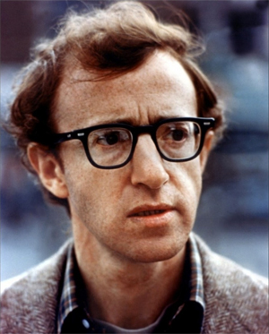

Woody Allen was born Allan Stewart Konigsberg on December 1, 1935 in Brooklyn, New York, to Nettie (Cherrie), a bookkeeper, and Martin Konigsberg, a waiter and jewellery engraver. His father was of Russian Jewish descent, and his maternal grandparents were Austrian Jewish immigrants. As a young boy, he became intrigued with magic tricks and playing the clarinet, two hobbies that he continues today.
Allen broke into show business at 15 years when he started writing jokes for a local paper, receiving $200 a week. He later moved on to write jokes for talk shows but felt that his jokes were being wasted. His agents, Charles Joffe and Jack Rollins, convinced him to start doing stand-up and telling his own jokes. Reluctantly he agreed and, although he initially performed with such fear of the audience that he would cover his ears when they applauded his jokes, he eventually became very successful at stand-up. After performing on stage for a few years, he was approached to write a script for Warren Beatty to star in: What's New Pussycat (1965) and would also have a moderate role as a character in the film. During production, Woody gave himself more and better lines and left Beatty with less compelling dialogue. Beatty inevitably quit the project and was replaced by Peter Sellers, who demanded all the best lines and more screen-time.
